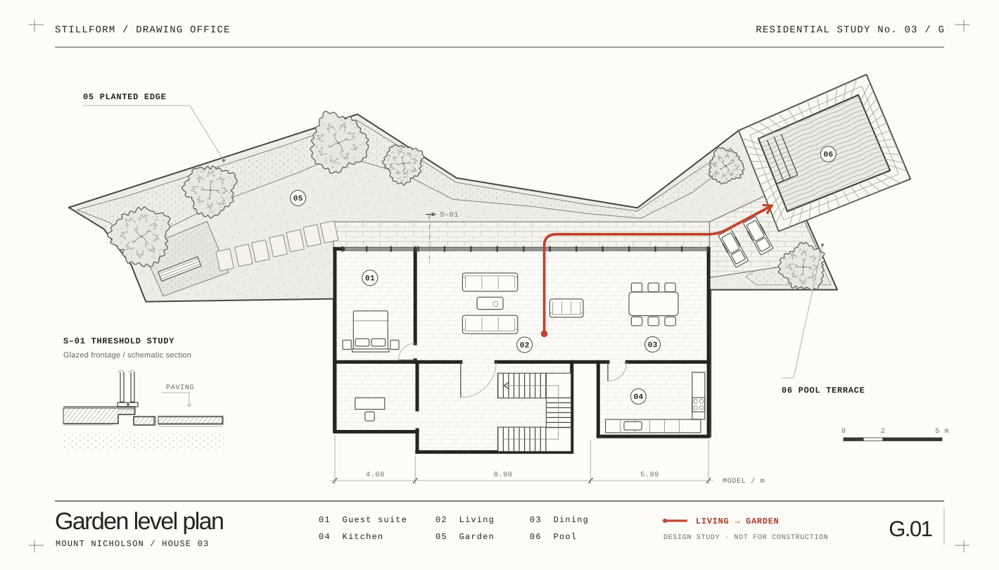
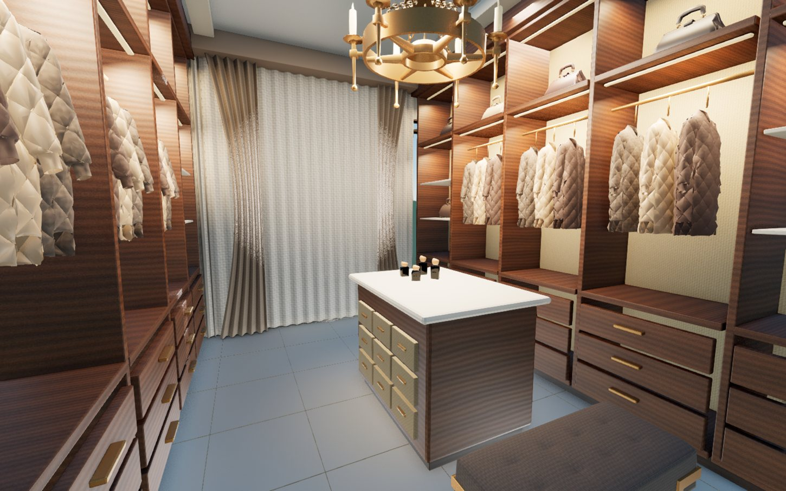

香港山頂住宅研究
尼高遜山
三號屋
Mount Nicholson, House 3
從客廳的梳化起身，走過趟門，沿平台轉彎才到泳池。圖上這條紅線，就是我們在模型裏走過的路。

作品目錄
Selected work
關於靜築
The practice

靜築做住宅的空間規劃和室內設計。討論一間屋，我們通常由住戶每日會走的路開始：飯廳離廚房有幾遠，拉開餐椅後，後面還能不能過人。
以三號屋為例，樓上的兩間房沒有再放睡床。一間留給私人影院，另一間改作衣帽間。圖紙定下間隔，再在模型裏繞着首飾中島走一圈，檢查通道。
看一樓衣帽間設計服務
Services
住宅空間規劃
把家具、門扇和主要通道放在同一張平面圖。圖上有依據的尺寸照錄；要量度才能確認的地方，另行標記。
室內與物料設計
由常接觸的部位揀樣板，例如梳化坐墊、櫃門和枱面。先並排看色澤和紋路，再放回房內看日光下的分別。
3D 空間覆核
在網頁模型看各層的關係，再用網頁漫遊從人眼高度試行。三號屋可以由客廳出花園，亦可以上樓看影院。
項目查詢
有圖則就由圖則開始；未有的話，
先記下你最想改動的地方。